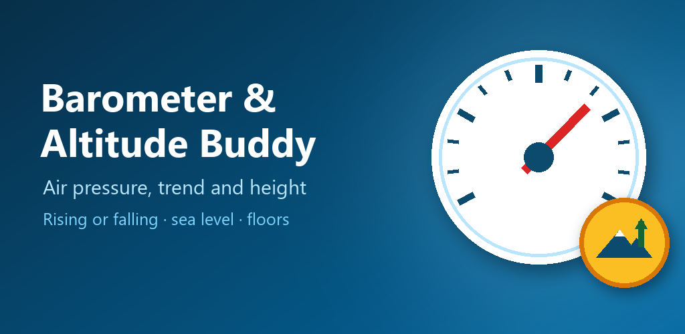
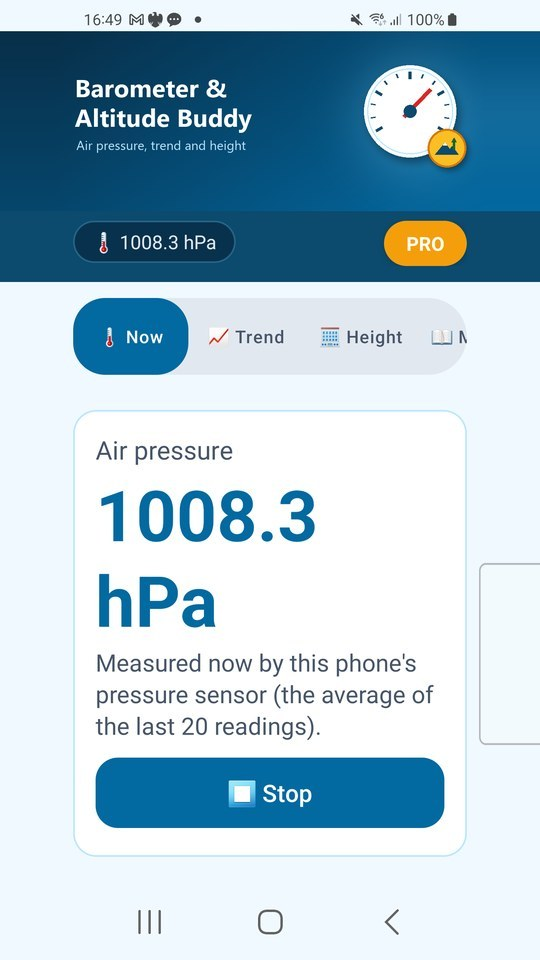
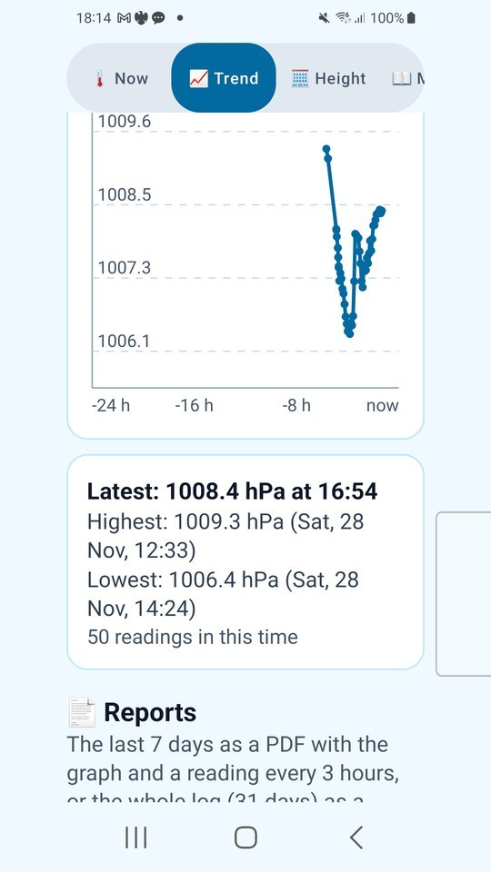
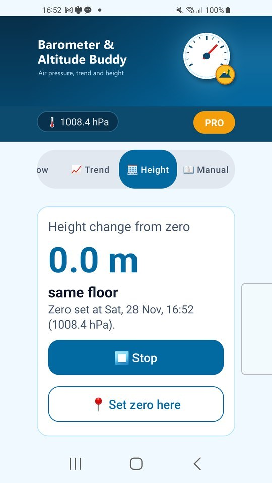
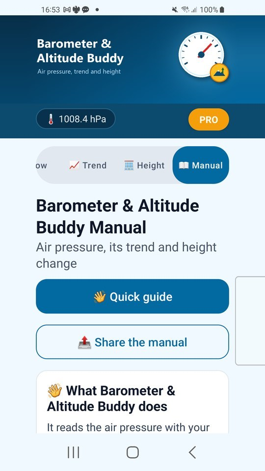

🌍 International version

Everything below is the same text as the Manual in the app (📖 Manual tab).
It reads the air pressure with your phone's own pressure sensor (barometer), shows how the pressure has changed over the last 3 hours and days, and works out how far up or down you've gone from where you set zero.
Every pressure in the app is one the phone measured. Sea-level pressure and height are worked out from those measurements and are labelled as such. Phones without a pressure sensor can't measure: the app says so.
The app opens without measuring. Tap ▶️ Start and the pressure appears, the average of the last 20 readings so the last digit stays steady. The screen stays on while it measures. Tap ⏹ Stop when you're done; leaving the app stops it too.
The last 3 hours shows the change, for example -1.2 hPa · Falling slowly. It needs 3 hours of readings saved while measuring (see 📈 Trend). The words are the Met Office's: steady (under 0.1 hPa), slowly (0.1 to 1.5 hPa), rising or falling (1.6 to 3.5 hPa), quickly (3.6 to 6 hPa) and very rapidly (over 6 hPa).
Weather reports give the pressure at sea level, so they're higher than what you measure on a hill. Tap ⛰️ Set your height and type your height above sea level from a map or a GPS app. The app then works out the sea-level pressure from what it measures (standard atmosphere), so you can compare it with your weather report.
Rising pressure often comes before settled weather, falling pressure before unsettled weather. A fall of 3 hPa or more in 3 hours often means wind and rain are on the way. It's a guide, not a forecast.
While the app is measuring it saves a reading every 5 minutes into the pressure log. It only measures while it's open on the screen (the screen stays on), never in the background, so to follow the pressure for hours or days leave it measuring, for example on its charger as a desk barometer. Where it wasn't measuring, the graph leaves a gap. The last 31 days are kept on your phone.
The graph shows the last 24 hours, with the latest, highest and lowest readings. Pro adds 7 and 30 days. 🗑 Clear the log deletes all readings.
Stand where you want zero, for example the ground floor or your car's level, and tap 📍 Set zero here (hold the phone still for a moment). Then the app shows how far up or down you are, in metres or feet, and about how many floors. Change the height of one floor under Settings (3 m to start with).
Air pressure falls about 0.12 hPa for every metre near sea level, and the weather changes it too, slowly. So set zero again just before you use it: it's good over a few minutes (stairs, lifts, car parks), not for hours.
Pressure starts in the usual unit where your phone is set: inches of mercury in the USA, kilopascals in Canada, millimetres of mercury in Russia, Belarus and Kazakhstan, and hectopascals elsewhere (hPa, the same as millibars). Heights start in feet in the USA, Liberia and Myanmar and in metres elsewhere. Change both on 📈 Trend › Units. Numbers are written with your phone's decimal mark.
Free: the live pressure, the 3-hour change, the 24-hour graph, sea-level pressure and height change. No ads.
Pro, one payment for life (no subscription): the 7-day and 30-day graphs, the pressure report (PDF) and the spreadsheet (CSV). Tap GO PRO on the banner. Already bought it on this Google account? Tap Restore purchase in the same pop-up.
📄 Pressure report: the last 7 days as a PDF, with the graph, the latest, highest and lowest readings, the 3-hour change and a reading for about every 3 hours (the saved reading nearest each 3-hour mark).
📊 Spreadsheet (CSV): every reading in the log, with the date and time and the pressure in hPa and in your unit.
No account and no sign-in. The readings stay on this phone: Barometer & Altitude Buddy has no servers and sends nothing anywhere. The PDFs and the spreadsheet only leave the phone when you share them. The pressure sensor needs no permission, and the app asks for none. Uninstalling the app deletes everything in it.
Barometer & Altitude Buddy v1.0 (Build 1)
Publisher: AppStack Studio
| Question | Many barometer apps | Barometer & Altitude Buddy |
|---|---|---|
| Where the numbers come from | Often weather-service figures mixed in | Only what your phone's own sensor measures; worked-out values are labelled |
| Rising or falling? | An arrow with no rule | The 3-hour change in the Met Office's own words, from steady to very rapidly |
| Battery and permissions | Location and background tracking | No permissions; it measures only while you use it (▶️ Start to ⏹ Stop) |
| Ads and account | Often ads or a sign-in | No ads, no account: everything stays on your phone |
| Price | Subscriptions or paid extras | Free to use; Pro is one payment for life (no subscription) |

1. The air pressure now
Measured by the phone's sensor, in your unit.

2. Rising or falling
The graph of the readings saved while measuring.

3. Height change
How far up or down from where you set zero, and floors.

4. The manual
Everything explained, in the app and as a PDF.
Screenshots: Barometer & Altitude Buddy 1.0 on Samsung Galaxy phones, with readings their own sensors measured.